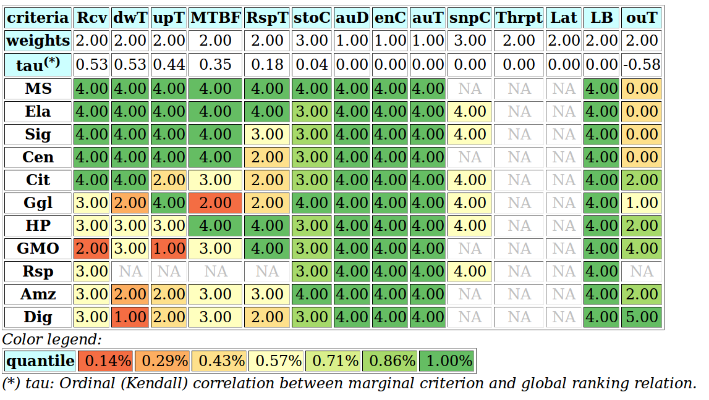
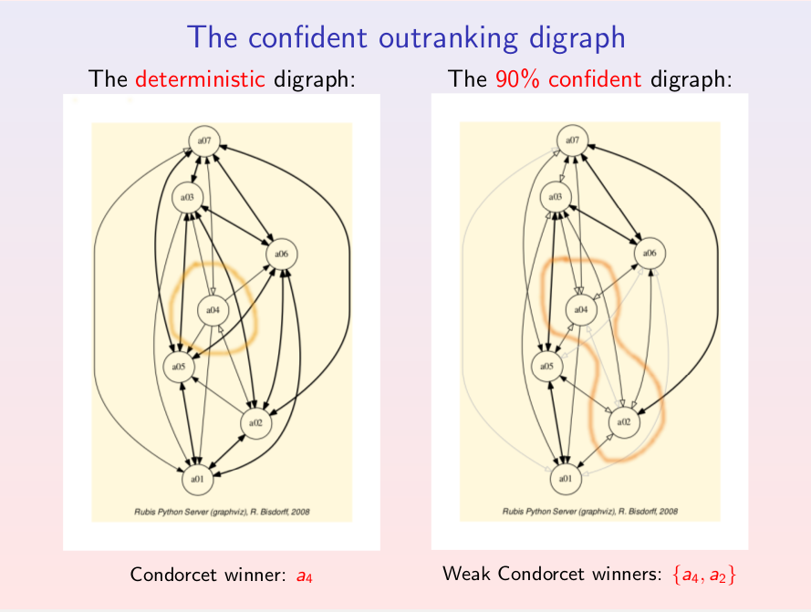
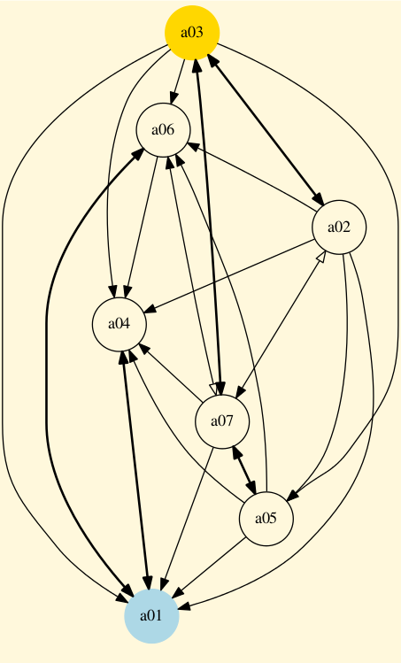

Latest Research Activities
Contributions to Algorithmic Decision Theory
The Digraph3 collection of Python3 modules
All our algorithmic research is actually implemented in Python3.6+ and published with an extensive technical documentation and tutorials covering various topics like:
- Computing the winner of an election,
- Building and manipulating outranking digraphs,
- On computing graph kernels
- Computing best choice recommendations,
- Ranking with multiple incommensurable criteria,
- Rating with learned quantile norms.
- HPC-ranking from big outranking digraphs,
- Coping with missing data and indeterminateness,
- On confident outrankings with uncertain criteria significances,
- About split,interval and permutation graphs,
UL HPC big data ranking records
In the context of the GDRI-Algodec "Algorithmic Decision Theory", supported by the CNRS and the FNR, we developped multicriteria ranking algorithms for large sets of potential decision alternatives: up to several millions of alternatives evaluated on multiple incommensurable ordinal performance criteria. This research is motivated by the development of a visualization tool - a heat map - for performance tables showing the decision alternatives linearly ordered form the best to the worst, and the individual performances colored by quantiles equivalence classes (see picture below). |
|  Example heat map from a CloudCom 2015 conference paper by Shyam Wagele et al. |
By using cythonized Python3 multiprocessing resources and the Digraph3 multicriteria software library, we may linearly rank without ties in less than 3 minutes on the UL HPC Iris skylake machines with 28 single threaded cores with a CPU memory of about 30GB, a million of decision alternatives evaluated on 21 incommensurable performance criteria by balancing an economic, an ecological and a societal decision objective. The theoretical outranking space consists of 1 trillion (1012) of pairwise comparisons. A "small" set of 1000 decision alternatives, in a similar setting, may thus be ranked typically in less than a tenth of a second. |
R. Bisdorff (2016). Computing linear rankings from trillions of pairwise outranking situations. In Proceedings of DA2PL'2016 From Multiple Criteria Decision Aid to Preference Learning, R. Busa-Fekete, E. Hüllermeier, V. Mousseau and K. Pfannschmidt (Eds.), University of Paderborn (Germany), Nov. 7-8 2016: 1-6 (downloadable full text PDF file 451.4 kB). |
On confident outrankings with multiple criteria of uncertain significance
When modelling preferences following the bipolar-valued outranking approach, the sign of the majority margins do sharply distribute validation and invalidation of pairwise outranking situations. How can we be confident in the resulting outranking digraph, when we acknowledge the usual imprecise knowledge of criteria significance weights and a small majority margin? To answer this question, we propose to model the significance weights as random variables following more or less widespread distributions around a central weight value that corresponds to the given deterministic weight. As the bipolarly valued random credibility of an outranking statement results from a simple sum of positive or negative independent and similarly distributed random variables, we may apply the CLT for computing likelihoods that a given majority margin is indeed positive, respectively negative. To test the effective convergence of the CLT likelihoods, we apply Monte Carlo simulations of outranking digraph constructions. Our computational results confirm a satisfactory convergence even for a random performance tableau with only seven criteria. |
 |
Building a multiple criteria quantiles sorting recommendation
We apply order statistics for sorting a set of n potential deicison actions, evaluated on p incommensurable performance criteria, into k quantile equivalence classes, based on pairwise outranking characteristics involving the quantile class limits observed on each criterion. Thus we may implement a weak ordering algorithm of linear complexity O(npk).
|  |
The Rubis progressive best choice recommendationThe main concern of the RUBIS method is tackling the choice problem in the context of multiple criteria decision aiding. Its genuine purpose is to help a decision maker to determine a single best decision alternative. Methodologically we focus on pairwise comparisons of these alternatives which lead to the concept of bipolar-valued outranking digraph. The work is centred around a set of five pragmatic principles which are required in the context of a progressive decision aiding methodology. Their thorough study and implementation in the outranking digraph lead us to define a choice recommendation as an extension of the classical digraph kernel concept. |
K-Sorting: A multiple ordinal criteria approach for supervised categorical sorting
Practical applications concern European University Rankings, FNR foresight topics ranking, Selection of Master students, etc.
Luxembourg Decision Sciences
SCImago (Scopus) Country Rank
| International visibility | 1996-2017 |
|---|---|
| H Index | 26 |
| Documents | 411 |
| Citable Documents | 380 |
| Citations | 2975 |
| Self Citations | 437 |
| Citations per Document | 7.24 |
| %Luxembourg/%world (2017) | 3.6 |
 Raymond Bisdorff. Best seen with Firefox.
Raymond Bisdorff. Best seen with Firefox.


- R. Bisdorff
Site Index - Home
- Short CV
- Publications
- Research Notes
- Conferences
- Research
- - - - - -
- Digraph3
- Documentation